# A tibble: 132 × 6
pid time_point arm nugent_score crp_blood ph
<chr> <chr> <chr> <dbl> <dbl> <dbl>
1 pid_01 baseline placebo 8 0.44 5.7
2 pid_01 week_1 placebo 7 1.66 5.2
3 pid_01 week_7 placebo 7 1.44 5.4
4 pid_02 baseline placebo 7 1.55 5.2
5 pid_02 week_1 placebo 7 0.75 4.8
6 pid_02 week_7 placebo 4 1.17 4.2
7 pid_03 baseline placebo 6 1.78 4.8
8 pid_03 week_1 placebo 10 0.57 5.3
9 pid_03 week_7 placebo 7 1.79 5.2
10 pid_04 baseline placebo 5 1.76 4.8
# ℹ 122 more rowsMore data wrangling and visualization
Workshop 1, Module 4
Goals for this module
By the end of this module you can:
- name what a row represents before and after every verb in a pipeline
- collapse a table to one row per group with
group_by+summarise - attach data from another table with
left_join - filter by membership in another table with
semi_join - reshape between long and wide with
pivot_longerandpivot_wider - pick the right plot for a distribution (histogram, boxplot, quasirandom, violin)
- layer raw observations under a computed summary in one figure
Module 3 preserved row meaning. Module 4 changes it.
Module 3’s verbs all kept “what a row represents” the same: filter drops rows but each remaining row still means the same thing; mutate adds columns; arrange reorders.
Module 4’s verbs change it. Or sometimes don’t. You have to know which.
The whole module asks one question on every slide: what does a row represent now?
The through-line: table_02
132 rows. Row = participant-visit (44 participants × 3 visits).
We will transform this same table through the next 18 slides. Watch what each verb does to the row count, and to what a row represents.
group_by is a state change, not a shape change
# A tibble: 132 × 6
# Groups: pid [44]
pid time_point arm nugent_score crp_blood ph
<chr> <chr> <chr> <dbl> <dbl> <dbl>
1 pid_01 baseline placebo 8 0.44 5.7
2 pid_01 week_1 placebo 7 1.66 5.2
3 pid_01 week_7 placebo 7 1.44 5.4
4 pid_02 baseline placebo 7 1.55 5.2
5 pid_02 week_1 placebo 7 0.75 4.8
6 pid_02 week_7 placebo 4 1.17 4.2
7 pid_03 baseline placebo 6 1.78 4.8
8 pid_03 week_1 placebo 10 0.57 5.3
9 pid_03 week_7 placebo 7 1.79 5.2
10 pid_04 baseline placebo 5 1.76 4.8
# ℹ 122 more rowsSame 132 rows. Row meaning unchanged. What changed is that subsequent verbs now act per group.
summarise collapses each group to one row
# A tibble: 44 × 3
pid mean_ph mean_nugent
<chr> <dbl> <dbl>
1 pid_01 5.43 7.33
2 pid_02 4.73 6
3 pid_03 5.1 7.67
4 pid_04 5.1 7
5 pid_05 3.87 4.33
6 pid_06 5.3 8.67
7 pid_07 5.07 6.33
8 pid_08 5.07 7
9 pid_09 4.23 4
10 pid_10 3.77 3
# ℹ 34 more rows132 → 44 rows. Row = participant. Visits collapsed.
Different grouping, different row meaning
# A tibble: 6 × 3
# Groups: arm [2]
arm time_point mean_ph
<chr> <chr> <dbl>
1 placebo baseline 5.09
2 placebo week_1 4.82
3 placebo week_7 4.73
4 treatment baseline 4.54
5 treatment week_1 3.51
6 treatment week_7 3.90132 → 6 rows. Row = arm-timepoint. Same starting data, different grouping, different row meaning.
You picked what a row means
The verb didn’t decide.
When you wrote group_by(pid), the row collapsed to a participant.
When you wrote group_by(arm, time_point), it collapsed to an arm-timepoint cell.
The grouping is the design choice that decides what a row will mean after summarise.
Quick check
What does each row represent, and how many rows, after:
Predict before the reveal.
group_by + mutate — same rows, derived by group
# A tibble: 6 × 4
# Groups: arm [1]
pid arm ph rank_ph_within_arm
<chr> <chr> <dbl> <dbl>
1 pid_01 placebo 5.7 68
2 pid_01 placebo 5.2 48
3 pid_01 placebo 5.4 61
4 pid_02 placebo 5.2 48
5 pid_02 placebo 4.8 27.5
6 pid_02 placebo 4.2 7.5Still 132 rows, row = participant-visit. The new column is computed within each arm. group_by doesn’t always collapse; the verb after it decides.
left_join — the mutating join
left_join adds columns from a second table by matching on a key. Same row meaning, same row count (when the join is well-formed).
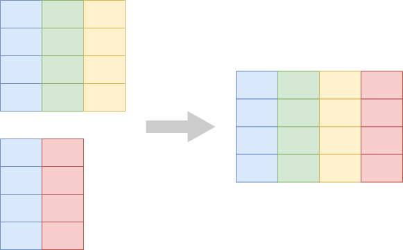
left_join — demo
# A tibble: 44 × 8
pid mean_ph mean_nugent arm smoker age education sex
<chr> <dbl> <dbl> <chr> <chr> <dbl> <chr> <lgl>
1 pid_01 5.43 7.33 placebo non-smoker 26 grade 10-12, mat… FALSE
2 pid_02 4.73 6 placebo smoker 33 grade 10-12, mat… FALSE
3 pid_03 5.1 7.67 placebo smoker 30 post-secondary FALSE
4 pid_04 5.1 7 placebo non-smoker 34 grade 10-12, not… FALSE
5 pid_05 3.87 4.33 treatment non-smoker 29 grade 10-12, mat… FALSE
6 pid_06 5.3 8.67 placebo smoker 34 post-secondary FALSE
7 pid_07 5.07 6.33 placebo non-smoker 31 grade 10-12, not… FALSE
8 pid_08 5.07 7 placebo smoker 30 grade 10-12, not… FALSE
9 pid_09 4.23 4 treatment non-smoker 35 grade 10-12, not… FALSE
10 pid_10 3.77 3 treatment non-smoker 32 less than grade 9 FALSE
# ℹ 34 more rows44 rows in, 44 rows out. Row = participant (unchanged). New columns: arm, smoker, age, education, sex.
semi_join — the filtering join
semi_join keeps rows in the left table that have a match in the right table. No new columns. Same row meaning, fewer rows.
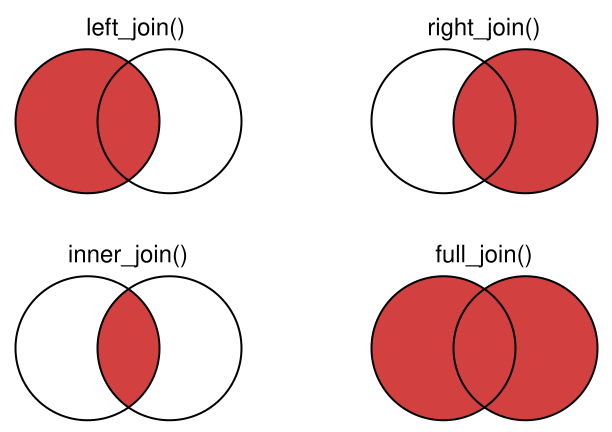
semi_join — demo
# A tibble: 17 × 3
pid mean_ph mean_nugent
<chr> <dbl> <dbl>
1 pid_02 4.73 6
2 pid_03 5.1 7.67
3 pid_06 5.3 8.67
4 pid_08 5.07 7
5 pid_11 4.47 4
6 pid_14 4.87 6.33
7 pid_18 3.93 4.33
8 pid_20 4.8 5.67
9 pid_25 4.1 3
10 pid_26 4.47 3.67
11 pid_27 4.97 6.67
12 pid_29 4.6 4.67
13 pid_33 3.83 3
14 pid_38 4.8 5.67
15 pid_41 4.03 3.33
16 pid_42 4.77 6
17 pid_43 4.3 6 Row = participant (unchanged). Rows that aren’t smokers are dropped.
Watch out — many-to-many joins multiply rows
If both sides have duplicate keys, the join multiplies rows:
# A tibble: 5 × 3
id x y
<dbl> <chr> <chr>
1 1 a p
2 1 a q
3 1 b p
4 1 b q
5 2 c r 3 + 3 = … 5 rows. A well-formed join from a tidy left table should not change your row count. If it does, your key isn’t unique somewhere.
Quick check
What does each row represent, and how many rows, after:
(Hint: arm appears in both tables. Does that change anything?)
pivot_longer — from wide to long
Each measurement column becomes a row.
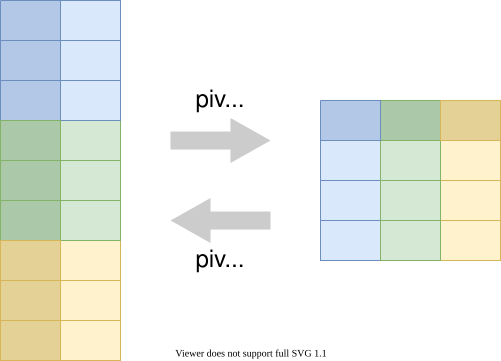
pivot_longer — demo
# A tibble: 396 × 5
pid time_point arm measurement value
<chr> <chr> <chr> <chr> <dbl>
1 pid_01 baseline placebo ph 5.7
2 pid_01 baseline placebo nugent_score 8
3 pid_01 baseline placebo crp_blood 0.44
4 pid_01 week_1 placebo ph 5.2
5 pid_01 week_1 placebo nugent_score 7
6 pid_01 week_1 placebo crp_blood 1.66
7 pid_01 week_7 placebo ph 5.4
8 pid_01 week_7 placebo nugent_score 7
9 pid_01 week_7 placebo crp_blood 1.44
10 pid_02 baseline placebo ph 5.2
# ℹ 386 more rows132 → 396 rows. Row = participant-visit-measurement.
This is the move that unlocks faceting. facet_wrap() draws one panel per value of a column — so when you want a panel per measurement, reshape to long with pivot_longer first. We use exactly this in Exercise 2.
pivot_wider — from long to wide
The inverse: one row per entity with the previously-long values spread out as columns.
pivot_wider — demo
# A tibble: 2 × 4
# Groups: arm [2]
arm baseline week_1 week_7
<chr> <dbl> <dbl> <dbl>
1 placebo 5.09 4.82 4.73
2 treatment 4.54 3.51 3.906 → 2 rows. Row = arm. Three new columns, one per visit. Useful for table-style display.
Let’s take a poll
Go to the event on wooclap

Exercise 1
Open notebooks/04-wrangling.qmd in your Codespace.
Group A: agentic. Group B: manual.
Visualization
Marks that summarise, or marks arranged by density
Module 3 said every row of the data becomes a mark.
Module 4 extends it. Some plots count rows into bins. Some summarise many rows into one mark. Some keep every row visible but use the layout to reveal density.
Several ways to show a distribution.
geom_histogram — bin and count
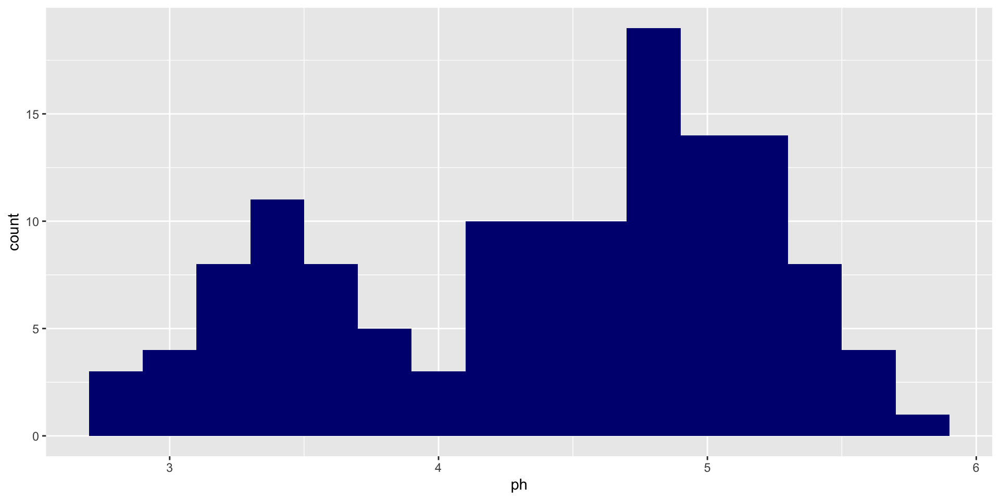
One bar = count of rows in a bin. Many rows per mark. Bin width matters — try binwidth = 0.05 and binwidth = 1 to see how the picture changes.
geom_bar for counting
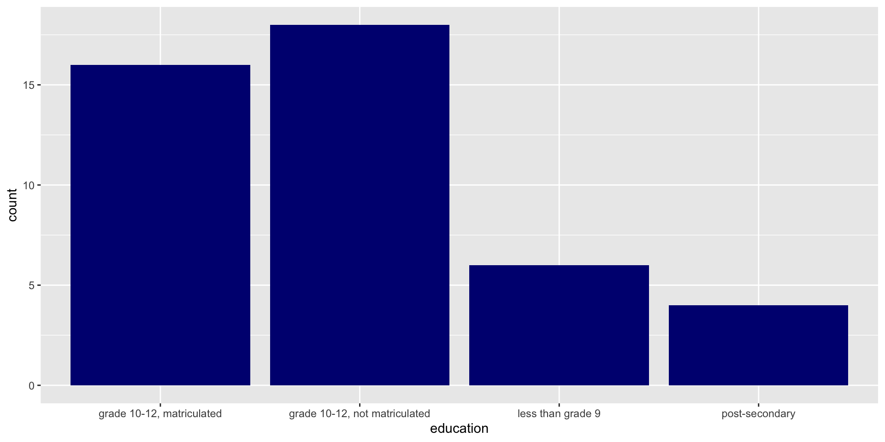
Same idea as count(education) |> geom_col(). geom_bar does the count internally; geom_col is for pre-counted data.
geom_boxplot revisited
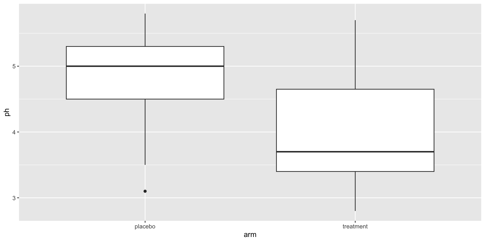
A five-number summary of many rows. Default choice for comparing distributions across many groups.
geom_quasirandom — every row visible
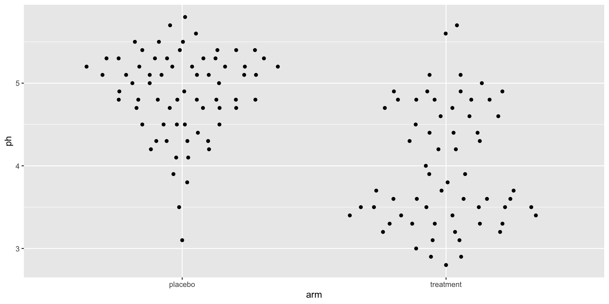
From ggbeeswarm. Each row is still one mark (1:1), but horizontal jitter is set by local density at that y-value. The cluster shape reveals the distribution without abstracting rows away.
Density, briefly
The fat parts of a quasirandom plot are where density is high.
That is what density means. We will see an explicit smoothed version in a moment.
Plotting your own summary
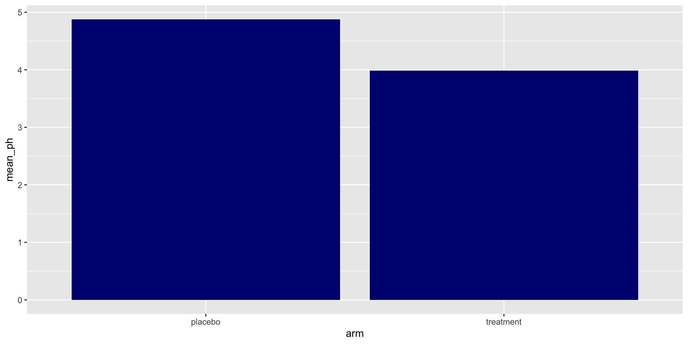
After you summarise, each row is one summary → one bar. Row-to-mark ratio is 1:1 again.
Adding uncertainty
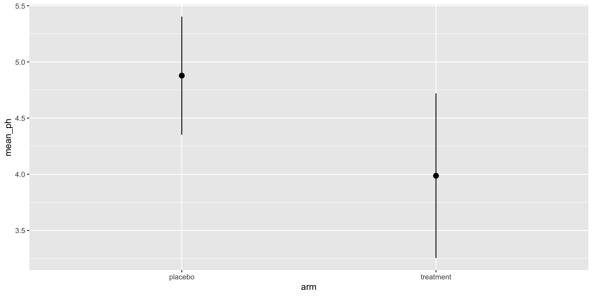
geom_pointrange() shows the mean as a point and ±SD as a line. The standard “mean ± SD” mark.
Layered: raw rows under a summary mark
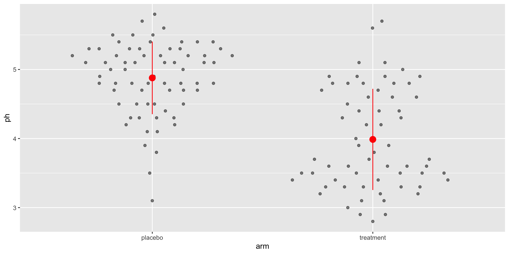
Two layers. Two data tables. One figure. Layers can have different data.
geom_violin
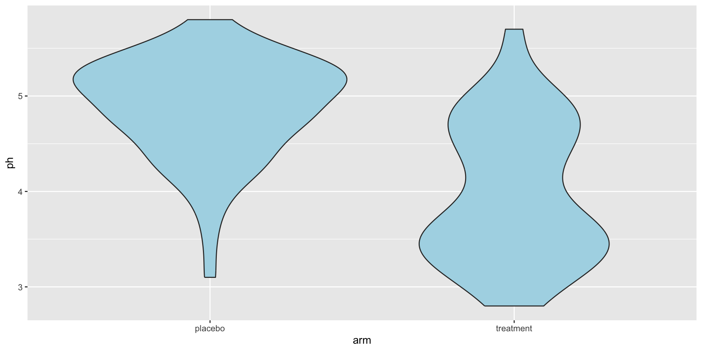
Shape + summary in one mark. The smoothed sibling of geom_boxplot for comparing distributions across groups.
geom_density
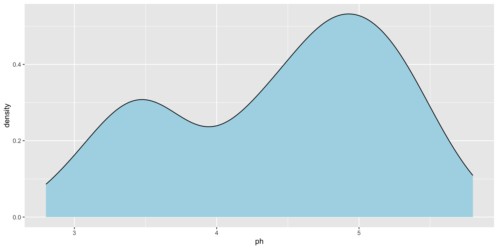
A smoothed density curve for one continuous variable. The explicit version of the “fat parts” idea from earlier.
Layered: violin + quasirandom
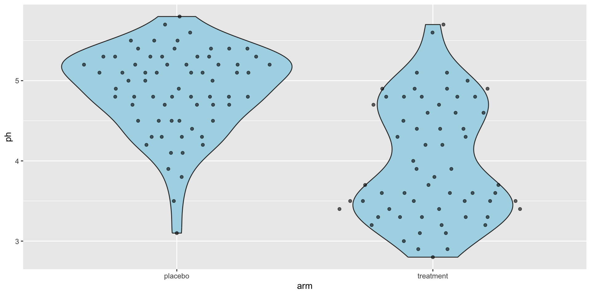
Group shape from the violin, individual rows from quasirandom on top.
Faceted plots from long-format data
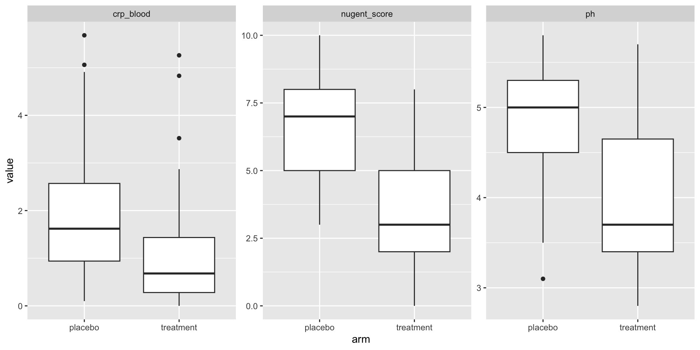
The pivot_longer from the wrangling half is what enables this kind of small-multiples plot — each facet sees one slice of the long table. Want facets? Reshape to long first.
Choosing a distribution geom
- One variable’s distribution →
geom_histogramorgeom_density - Compare many groups concisely →
geom_boxplot - Show every observation →
geom_quasirandom - Shape + observations together →
geom_violin+geom_quasirandom
The choice depends on what you want the reader to see.
Let’s take another poll
Go to the event on wooclap
Exercise 2
Open notebooks/04-visualization.qmd in your Codespace.
The modes flip: whoever was agentic in Exercise 1 is manual now, and vice versa.